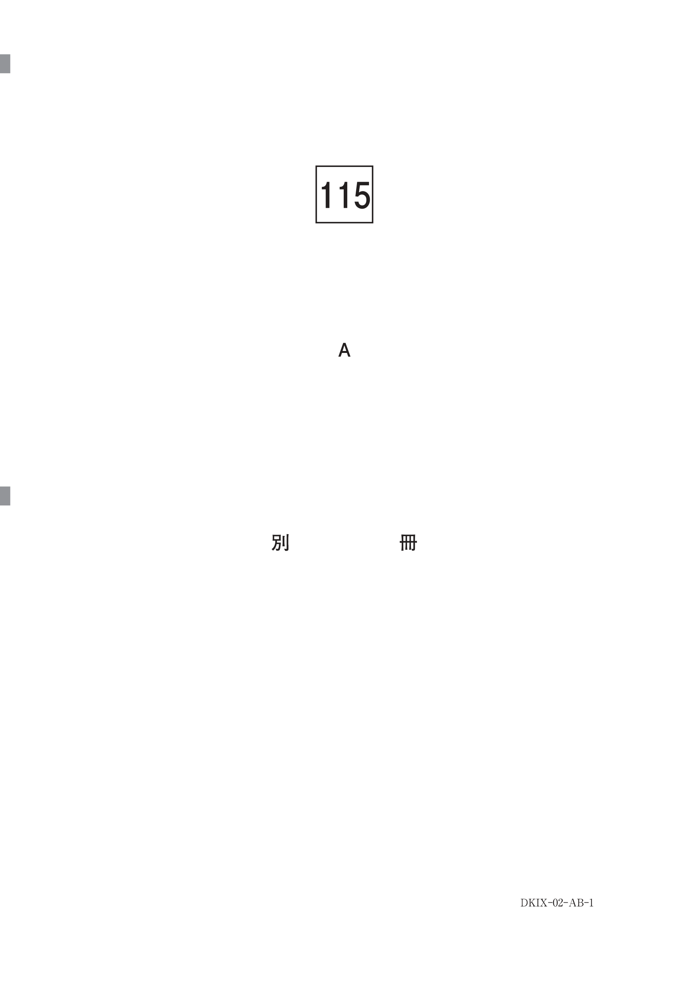

歯内治療を適切に行うためには、正しい診断が必要である。診断には病理診断（病気の本質を明らかにする）と臨床診断（治療方針を決定するための診断）がある。
診査は自覚症状の診査（問診）と他覚症状の診査（各種検査）に分けられる。
問診 → 視診・触診 → 各種検査 → 診断 → 治療方針決定
| 診査法 | 目的・適応 |
|---|---|
| 問診 | 主訴、現病歴、既往歴の聴取。自覚症状の把握 |
| 視診 | 歯・歯肉の状態、齲蝕・変色・腫脹の確認 |
| 触診 | 歯肉の腫脹・圧痛、根尖部の圧痛確認 |
| 打診 | 根尖性歯周炎の有無（垂直打診で陽性→根尖病変） |
| 動揺度検査 | 歯周組織の状態評価 |
| 歯髄電気診 | 歯髄の生死判定（最も信頼度が高い） |
| 温度診 | 歯髄反応の検査（冷刺激・温熱刺激） |
| 透照診 | 亀裂・破折の診査、歯髄壊死の補助診断 |
| 麻酔診 | 患歯の同定が困難な場合 |
| 切削診 | 歯髄の生死判定（最終手段） |
歯髄の生死の判定は、生活歯か失活歯かで処置方針が大きく異なるため、歯内治療において最も重要な診断項目の一つである。
30歳の女性。上顎右側第一小臼歯の咬合痛を主訴として来院した。半年前から歯間部の食片圧入を自覚していたがそのままにしていたところ、最近になって症状が出るようになったという。自発痛はなく、冷温刺激に反応を示さなかった。初診時の口腔内写真（別冊No.1A）とエックス線画像（別冊No.1B）を別に示す。
診断に有効なのはどれか。1つ選べ。

【解説】「自発痛なし、冷温刺激に反応なし」という所見から歯髄壊死が疑われる。歯髄の生死を確認するために最も有効なのは歯髄電気診である。打診・動揺度測定は歯周組織の評価、麻酔診は患歯同定困難時に使用、レーザー蛍光強度測定は齲蝕検出に用いる。
| 知りたいこと | 選択する診査法 |
|---|---|
| 歯髄の生死 | 歯髄電気診、温度診、（切削診） |
| 根尖性歯周炎の有無 | 打診、触診、エックス線検査 |
| 患歯の同定 | 麻酔診 |
| 亀裂・破折 | 透照診、咬合診査（Tooth Slooth） |
| 露髄の有無 | インピーダンス測定（15kΩ以下で露髄） |